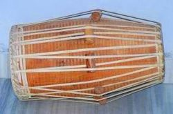

The pakhawaja is an Indian barrel-shaped, two-headed drum, a variant and
descendant of the older mridang.
It is the standard percussion instrument in the dhrupad style and is widely used
as an accompaniment for various forms of music and dance performances. The
pakhavaja has a low, mellow tone, very rich in harmonics. Set horizontally on a
cushion in front of the drummer's crossed leg, the larger bass-skin is played
with the left hand, the treble skin by the right hand. The bass face is smeared
with wet wheat dough which acts as the kiran and is the cause of the vivid bass
sound the pakhavaja produces.

Etymology:
The word pakhāvaja or pakhavāja is of Prakrit origin, whose Sanskrit equivalent
is pakṣavādya. This instrument is always known as pakhavaj and not pakshavadya.
This word is derived from the words pakṣa ("a side"), and vādya ("a musical
instrument"), it is said that, during the 14th century, the great mridangists
experimented with the materials used in mridang construction, and finally
started using wood for the main body as opposed to the original clay. Thus, a
new name pakhawaj emerged, whilst the older name, mridang was still used.
Technique:
As with the tabla, the pakhavaj rhythms are taught by a series of mnemonic
syllables known as bol. The playing technique vary from that of tabla in many
aspects: in the bass face, the artist hits with his whole palm instead of the
finger tip hitting which is done in tabla. In the treble face, the artist hits
his whole palm with the fingers properly placed on the skin to produce different
bols.
In traditional pakhavaj styles a student would learn a number of different
strokes which produce a specific sound. These are remembered and practiced with
corresponding syllables.
The very basic capacity is to play a theka in a particular tala or rhythmic
cycle, as for instance chautala, (which is unrelated to chowtal, a type of
folksong in the Bhojpuri region and sung by amateurs during the Phagwah/Holi
festival) in 12 beats:
| dha dha | din ta || kite dha | din ta | tite kata | gadi gene |
Advanced students learn reelas that are virtuoso pakhavaj compositions.